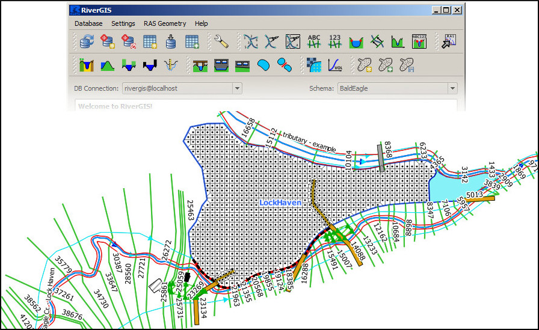

Welcome to RiverGIS!¶
RiverGIS is a QGIS plugin for creating HEC-RAS flow model geometry from spatial data. The functionality is similar to that of HEC-GeoRAS. For data store and spatial operations it needs a PostGIS database.
RiverGIS is free/libre software and is released under the GNU General Public License. Browse the source code on github.

Table of contents:
- Questions and Answers
- Requirements
- Step by step: HEC-RAS 1D Geometry
- Typical RiverGIS workflow
- Create database schema
- Model spatial projection
- Model Geometry Creation/Import
- River network
- Cross-sections
- Extract Manning’s n Values
- Additional cross-sections’ data
- Hydraulic Structures
- Lateral Structures
- Storage Areas
- Storage Areas Connections
- Create HEC-RAS GIS Import file (SDF)
- HEC-RAS 2D Geometry
- The Plugin Settings
- About RiverGIS